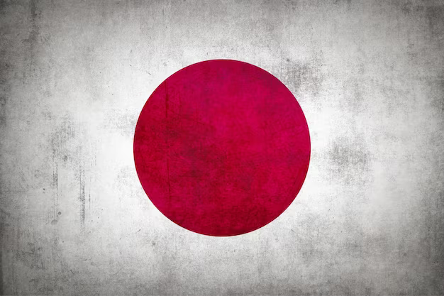
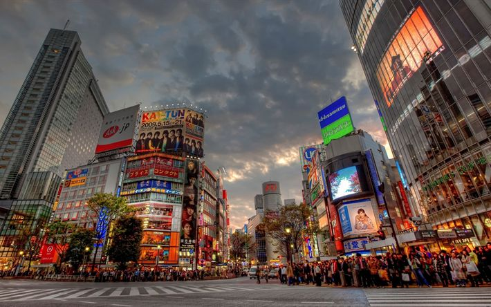

A bandeira do Japão é conhecida oficialmente como Nisshōki, mas é popularmente chamada de Hinomaru, que significa “círculo de sol”. O branco representa honestidade e pureza, e o vermelho simboliza paixão e sinceridade. O círculo vermelho remete ao Sol, um símbolo extremamente importante para o Japão, conhecido como a Terra do Sol Nascente. Além disso, o círculo vermelho também pode representar a deusa do sol na mitologia japonesa, Amaterasu.
A capital do Japão é a cidade de Tóquio que é a cidade mais populosa do mundo, com uma população de aproximadamente 37 milhões de pessoas na região metropolitana.Além disso, a estação de Shinjuku, em Tóquio, é a estação de trem mais movimentada do mundo em termos de número de passageiros.
Segundo dados de fevereiro de 2023, a população japonesa foi estimada em 124.631.000, tornando o Japão o décimo-primeiro país mais populoso do mundo. Além disso, o Japão tem uma área total de 377.975 km², tornando-o o 62º maior país do mundo